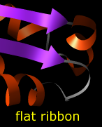
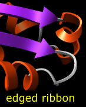
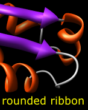
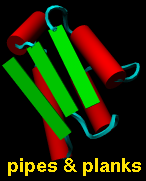
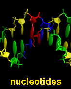
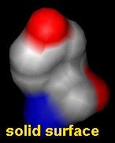
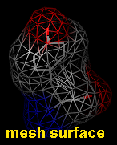
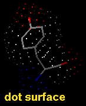

Several molecular display styles (representations) are available in Chimera. Atoms/bonds can be shown as:
A model can only have one wire linewidth, but individual atoms and bonds can be shown in different representations. Atom and bond displays can be combined with ribbons and surfaces. See also: presets, New Molecules preferences
The command represent sets atom/bond styles, bondrepr sets bond styles, and linewidth changes wire linewidth. Atom/bond styles and wire linewidth can also be changed using the Actions menu, the molecule model attributes panel, and the Selection Inspector.
Pseudobonds are drawn to show connections other than covalent bonds. For example, they can represent clashes, hydrogen bonds, or distance measurements. Pseudobond styles can be changed using the pseudobond attributes panel and the Selection Inspector.
Protein and nucleic acid chains can be shown with ribbons. Protein helix and strand assignments are taken from the input structure file or generated with ksdssp. For nucleic acids, the ribbon simply follows the backbone.
|  |  |  |
The built-in ribbon styles are:
The command ribbon displays ribbons, ribrepr sets which ribbon style is shown, and ribscale sets which scaling is applied. Ribbon display and style can also be controlled with the Actions menu; residue ribbon display, style, and scaling can be controlled in the molecule model attributes panel and the Selection Inspector.
Protein secondary structure can also be shown with PipesAndPlanks, and special representations of the base and sugar components of nucleic acids (combined with stick atoms/bonds in the figure) can be generated with the Nucleotides tool.
 The pipes-and-planks and special nucleotide representations are VRML objects and can only be displayed/undisplayed as a whole.
Chimera shows solvent-excluded molecular surfaces, composed of probe contact, toroidal, and reentrant surface. These differ from solvent-accessible surfaces, which are traced out by the probe center.
When a molecular surface is computed, total solvent-excluded and and solvent-accessible surface areas are reported in the Reply Log, along with the values for each disconnected part, or component. The values are calculated analytically. Multi-component surfaces are common; for example, a protein surface could include one or more completely enclosed interior pockets, and a ligand surface could separately enclose each of multiple ligand molecules.
Analytical solvent-excluded and solvent-accessible surface areas per atom and residue are assigned as attributes named areaSES and areaSAS, respectively. These may include contributions from more than one component. For example, one side of an atom could form part of an interior cavity while the other side could form part of the exterior surface.
|  |  |  |
Molecular surface styles are:
The command surface displays molecular surface, surfrepr sets which style is shown, and surftransparency adjusts surface transparency. Molecular surface display, style, and transparency can also be controlled with the Actions menu, the molecular surface attributes panel, the Selection Inspector, and the command setattr. Except for the Actions menu, these also allow changes in probe radius, vertex density, mesh line width, and dot size. Parameters for subsequently generated molecular surfaces can be set in the New Surfaces preferences.
In Chimera, molecular surfaces are created with embedded software from the MSMS package, described in:
Reduced surface: an efficient way to compute molecular surfaces. Sanner MF, Olson AJ, Spehner JC. Biopolymers. 1996 Mar;38(3):305-20.Dot molecular surfaces in MS/DMS format can also be displayed in Chimera.
A van der Waals (VDW) surface differs from a molecular surface in that fine crevices are not smoothed. A VDW dot surface can be displayed with the command vdw and its dot density adjusted with vdwdensity. The VDW dot size and dot density can also be adjusted in the the molecule model attributes panel. Note that the sphere representation also shows the VDW surface.
Chimera also displays other surfaces that are not necessarily molecular.